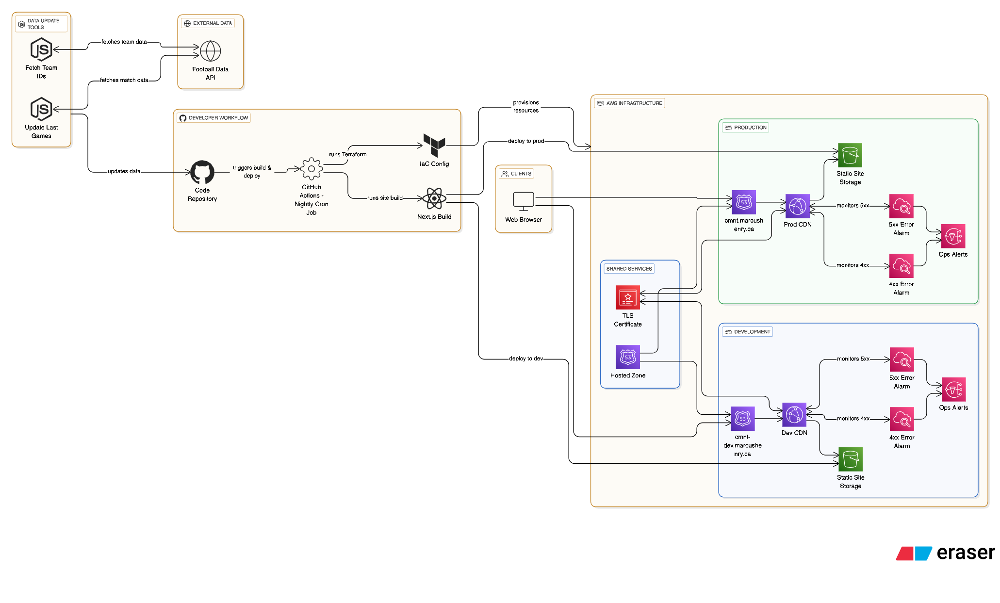

CMNT Squad Tracker Project

CMNT (Canada Men's National Team) Squad Tracker is a web app that tracks Canada Men’s National Team players and their current club form leading up to this Summer's World Cup. It is built to showcase a production-style DevOps workflow as much as the UI. It surfaces each player’s most recent club appearance with key indicators like minutes, goals, assists, results, and a last-updated timestamp to keep the data meaningful ahead of international windows. The site is built with Next.js, TypeScript, and CSS Modules, and it combines JSON player data with update scripts that pull live match stats from an external football API. Deployment is treated like a real cloud environment: the site is hosted on S3 with CloudFront, Route 53, and ACM, backed by infrastructure-as-code (Terraform) and GitHub-based branching for dev and prod. This project serves as a portfolio piece to demonstrate cloud architecture, automation, and modern CI/CD practices while delivering a useful, data-driven product. Live site: cmnt.marcushenry.ca.